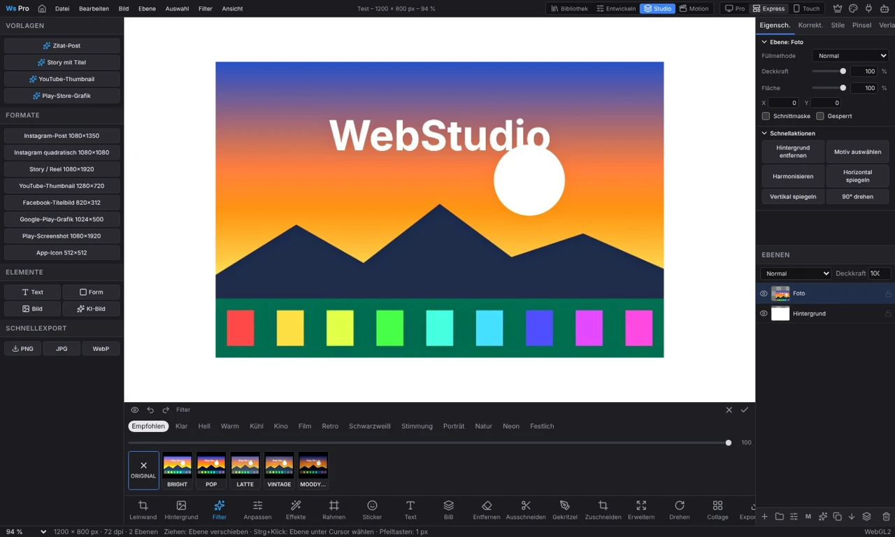
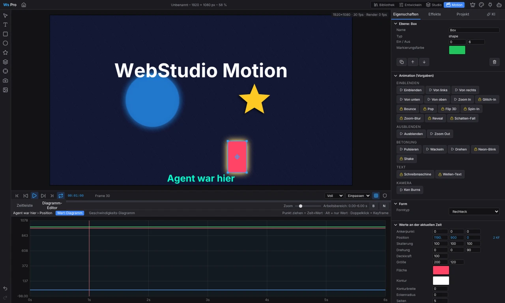
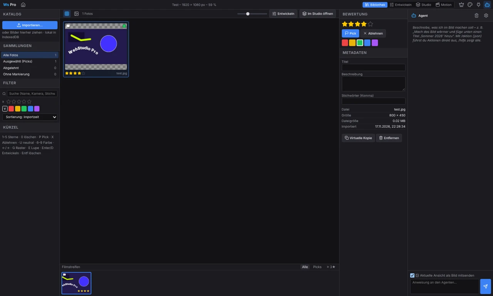

FotoDein Foto, in deinem Look.
Teste 55 Looks direkt auf deinem Motiv. Regle ihre Stärke und ergänze einen der 53 Effekte.
 Studio
StudioGestalte in Ebenen.
Setze Text, Formen und Bilder zusammen. Mit Masken und 27 Füllmethoden steuerst du, wie Ebenen ineinandergreifen.

MotionGib deiner Idee Bewegung.
Setze Keyframes für Position und Größe. Passe das Tempo im Kurveneditor an und exportiere als WebM oder PNG-Sequenz.

EntwickelnLicht und Farbe im Detail.
Passe Weißabgleich, Gradationskurven und einzelne Farbtöne an. Virtuelle Kopien halten mehrere Bearbeitungen eines Fotos im Katalog.
App-Ansichten aus Version 0.4.